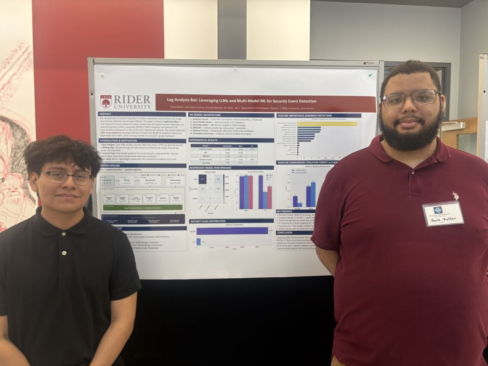

Log Analysis Helper Bot
An LLM-powered security log analysis assistant built for SOCs and security education. Uses AI to detect threats and generate plain-language incident reports.
- Multi-format parsing — text, JSON, CSV logs
- Supports OpenAI, Gemini, DeepSeek, local HuggingFace
- Precision / recall / F1 evaluation harness
- Simulated log generator for training & testing